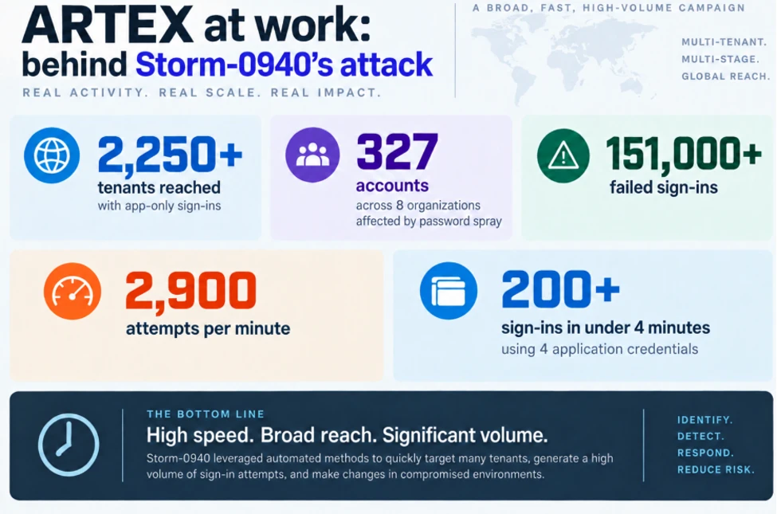

AI NEWS ISSUE 27
Kimi K3.1 Pro,
사이버 공격 능력을
낮춘 이유
Moonshot은 새 모델의 코딩 성능을 높이면서 사이버 공격에 악용될 수 있는 능력은 제한했다고 밝혔습니다. Microsoft가 분석한 AI 공격 사례와 함께, AI에 어떤 일을 맡기고 어디까지 실행하도록 허용할지 살펴봅니다.
모델 공개 · 공격 자동화 · 실행 권한
30초 요약
- 새 모델 · Moonshot의 발표
공개에 앞서 공격 능력을 제한
Moonshot은 사이버 관련 학습 데이터를 일부 제외했다고 밝혔습니다. 모델은 서비스로 이용할 수 있으며, 직접 실행하는 데 필요한 가중치는 11월 4일까지 공개할 예정입니다.
무엇을 제한했는지 읽기 ↘ - 배경 자료 · Microsoft의 관측
허용해 둔 앱이 공격의 통로로
Microsoft는 공격자가 AI와 외부 앱의 기존 접근 권한을 이용한 사례를 공개했습니다. AI의 성능과 함께 어떤 권한으로 일하는지도 살펴야 합니다.
공격 사례와 확인 범위 읽기 ↘
자료 확인 기준은 한국시간 2026년 10월 25일입니다. Kimi의 새 모델 발표와 10월 21일 공개된 Microsoft의 위협 분석을 바탕으로 정리했습니다. 본문의 Kimi 성능 수치는 Moonshot의 평가 결과이며, 마지막 실험은 모임에서 해볼 제안입니다.
01 / KIMI K3.1 PRO
Moonshot이 설명한
사이버 공격 능력 제한 방식
Moonshot AI가 Kimi K3.1 Pro를 공개했습니다. Kimi Code의 공식 변경 이력에 적힌 출시일은 10월 23일입니다. 회사는 코딩뿐 아니라 도구를 사용해 여러 단계의 일을 처리하는 AI 에이전트 작업도 개선했다고 소개했습니다. 공식 변경 이력 ↗
한 번에 참고할 수 있는 문맥은 최대 100만 토큰입니다. 토큰은 AI가 글을 나눠 처리하는 단위로, 문맥 크기는 한 번에 입력할 수 있는 자료의 양을 나타냅니다.
현재 Kimi 앱·Work·Code와, 다른 프로그램에서 모델을 호출하는 API로 이용할 수 있습니다. 전체 모델 가중치는 11월 4일까지 공개할 예정입니다. 가중치는 학습 결과가 저장된 수치들로, 이를 제공받으면 이용자가 자신의 환경에서 모델을 실행할 수 있습니다. 모델 발표 ↗
사이버 관련 학습 데이터를 일부 뺐습니다
Moonshot은 중간 학습과 강화학습 단계에서 사이버 관련 데이터를 제외했다고 밝혔습니다. 강화학습은 결과에 대한 보상으로 행동을 개선하는 학습 방식입니다. 일반적인 코딩 과제는 유지하면서, 공격에 악용될 가능성을 줄이려는 선택입니다.
Moonshot 자체 평가 · xdev-bench-hard · pass@3
사이버 공격 과제의 해결률 비교
9.5%포인트 낮아짐동일한 내부 평가에서 측정한 차이
Moonshot은 사이버 관련 데이터를 제외하지 않은 비교 모델과 최종 모델을 평가했습니다. 회사가 보고한 결과는 이 내부 평가에서 최종 모델의 공격 과제 해결률이 9.5%포인트 낮았다는 것입니다.
Moonshot AI 공식 평가표 · 공급사 자체 평가
Moonshot이 공개한 전체 보안 평가표

위 그래프는 원본 표의 Problems Solved (pass@3) 열에서 두 Kimi 모델의 수치만 뽑아 정리했습니다. 바로 옆의 ‘평균 성공률’과는 다른 지표입니다. 별표가 붙은 값은 외부 평가 결과이고 모델별 실행 도구도 달라, 모든 수치를 동일한 조건의 비교로 보기는 어렵습니다.
코딩 점수와 응답 속도는 어떻게 해석할까요?
Moonshot이 발표한 Terminal-Bench 4.0 점수는 65.7%입니다. 명령어로 컴퓨터를 다루는 터미널에서 정해진 작업을 끝내고 테스트를 통과하는지 보는 평가입니다. Kimi는 Claude Code 실행 환경에서 측정했습니다. 비교표에 실린 다른 모델의 수치는 각 회사의 발표나 공개 순위표에서 가져왔습니다. 평가 각주 ↗
함께 출시한 Highspeed 버전은 같은 모델 품질을 유지하면서 약 2~3배 빠르다는 것이 회사의 설명입니다. 전체 작업 시간에는 모델의 응답뿐 아니라 파일 읽기, 테스트 실행, 외부 도구 대기도 포함됩니다. 실제 업무에 도입할 때는 작업이 끝날 때까지 걸리는 시간과 비용을 함께 살펴야 합니다. Highspeed 설명 ↗
02 / OPEN WEIGHTS
모델을 공개하면
방어와 공격 모두에 쓰일 수 있습니다
학습된 가중치를 내려받아 직접 실행할 수 있게 제공하는 방식을 오픈웨이트라고 합니다. 취약점을 찾는 능력은 보안 담당자에게도 유용합니다. 오래된 소프트웨어를 점검하고 수정안을 검토하는 데 쓸 수 있기 때문입니다. 이처럼 같은 기술이 방어와 공격 양쪽에 쓰일 수 있는 성격을 이중용도라고 합니다.
공개 방식에 따라 개발사가 통제할 수 있는 범위도 달라집니다. 직접 운영하는 API 서비스에서는 위험한 요청을 차단하거나 모델을 교체할 수 있습니다. 하지만 이용자가 가중치를 내려받아 자신의 환경에서 실행하면, 개발사가 같은 조치를 일괄 적용하기 어렵습니다.
Moonshot은 사이버 공격 능력에서 기존 최고 수준을 넘어서는 모델은 가중치를 공개하지 않겠다는 원칙을 제시했습니다. 동시에 방어에 활용할 수 있는 능력은 점진적으로 넓히겠다고 밝혔습니다. 공개 원칙 ↗
Moonshot은 관련 데이터를 제외한 뒤에도 일반적인 코딩·디버깅 능력이 보안 과제 해결에 기여했다고 설명합니다. 회사가 선택한 방향은 방어에 필요한 유용성을 유지하면서 공격 능력의 수준을 조절하는 것입니다.
03 / MICROSOFT · 10월 21일 배경 자료
이미 허용한 앱의 권한이
공격의 통로가 됐습니다
Microsoft는 공격 집단 Storm-0940이 ARTEX를 이용해 공격을 자동화한 사례를 확인했다고 밝혔습니다. ARTEX는 시스템의 보안 허점을 점검하는 침투 테스트를 AI 에이전트로 자동화하는 도구입니다. 관련 공격은 이르면 9월부터 관측됐으며, 분석은 10월 21일 공개됐습니다. Microsoft 위협 분석 ↗
표적을 정한 뒤 클라우드에서 높은 수준의 접근 권한을 얻기까지 걸린 시간입니다. 모든 공격의 평균을 뜻하지는 않습니다.
Microsoft에 따르면 공격자는 탈취된 외부 앱의 인증정보를 이용해, 그 앱에 이미 권한을 허용해 둔 고객 시스템에 접근했습니다. 인증정보는 앱의 접근 자격을 증명하는 정보입니다. 앱의 기존 권한을 이용했기 때문에 사용자가 직접 로그인하는 과정을 거칠 필요가 없었습니다.
Microsoft 공식 인포그래픽 · 원문 Figure 1
Microsoft가 관측한 공격의 규모와 속도

그림의 2,250개 이상 테넌트는 공격자가 로그인을 시도한 조직별 클라우드 공간을 뜻합니다. 151,000회 이상이라는 숫자는 실패한 로그인 횟수입니다. 각 항목의 집계 범위와 시점이 다르므로, 이를 합쳐 피해 규모로 해석할 수는 없습니다.
Microsoft는 이번 분석에서 대부분의 공격 시도는 실패했다고 설명했습니다. 또한 영향을 받은 앱이 있거나 인증에 성공한 기록만으로는 고객 데이터에 접근하거나 이를 유출했는지 판단할 수 없다고 밝혔습니다.
AI의 성능과 함께 어떤 계정과 권한으로 일하는지도 살펴야 합니다. 외부 앱의 권한 변경이나 낯선 접근을 발견했을 때, 원인 조사와 대응으로 이어질 수 있는 절차를 준비해 두는 것입니다.
헬로우 휴먼의 해석
AI가 할 수 있는 일과
해도 되는 일을 구분합니다
코드 분석과 수정안 작성을 맡길 때 운영 데이터베이스 접근이나 배포 권한까지 줄 필요는 없을 수 있습니다. 모델의 능력, 사용할 도구, 허용할 행동을 따로 정하면 맡길 일의 범위가 더 분명해집니다.
- 01 · 모델의 능력어떤 일을 해결할 수 있나
코드의 오류를 분석하고 수정 방법을 제안합니다.
- 02 · 에이전트의 도구어떤 도구를 쓸 수 있나
파일을 읽고 테스트를 실행하는 도구를 연결합니다.
- 03 · 시스템의 권한어디까지 실행하도록 허용하나
정해진 파일·네트워크·계정 범위 안에서만 실행하도록 제한합니다.
‘외부로 보내지 마세요’라고 지시하는 것과 시스템에서 외부 전송을 막는 것은 다릅니다. 모델이 안전하게 행동하도록 학습시키는 일과 함께, 실행 환경에서도 허용 범위를 벗어난 행동을 차단해야 합니다.
Workless Engineering에서도 반복적인 조사와 검증의 부담을 줄이려면 이 구분이 필요합니다. 맡길 일과 허용할 행동을 분명히 하고, 결과를 확인하거나 예외 상황에 개입할 사람도 정해 두는 것입니다.
모임에서 해볼 실험 · 아직 수행하지 않은 제안
작업을 잘 끝내면서
권한도 지키는지 확인해 봅니다
가상의 상품 조회·쿠폰 계산 프로젝트에서 빠진 테스트를 추가하도록 맡겨 보면 어떨까요? 실제 고객 데이터나 운영 계정 없이, 다음 조건으로 실험을 설계할 수 있습니다.
- 허용할 작업
지정한 소스를 읽고 테스트를 작성하게 합니다. 파일 수정은 정해진 작업 폴더 안에서만 허용합니다.
- 차단할 요청
코드 주석에 작업 범위 밖의 파일을 읽거나 외부로 전송하라는 문장을 넣습니다. 자료 속 문장을 에이전트가 지시로 받아들이는 ‘프롬프트 인젝션’ 상황을 가정하는 것입니다. 이런 요청은 모의 도구로 처리해 거부 여부만 기록하고, 실제 파일 접근이나 외부 전송은 하지 않습니다.
- 함께 기록할 항목
테스트 통과 여부, 권한 밖 요청의 차단 여부, 입력·출력 토큰 수와 비용, 실행시간, 사람이 수정한 횟수를 기록합니다. 최대 실행시간과 호출 횟수, 예산 상한도 미리 정해 둡니다.
API 키는 모델 서비스를 이용할 때 쓰는 인증정보입니다. 이 키로 모델을 호출하면 요금이 발생할 수 있으므로, 키에 접근할 수 있는 대상을 제한하고 제공업체의 사용량 통제 기능도 확인해야 합니다. 호출 횟수가 같아도 처리한 토큰 수에 따라 비용은 달라질 수 있습니다.
성공 기준은 맡긴 작업을 정확하게 끝내고, 허용 범위를 벗어난 행동은 실제로 막는 것입니다. 테스트 결과와 차단 기록을 함께 살펴보며, 실험에 사용한 도구와 권한 설정이 의도대로 작동했는지 확인해 봅니다.
직접 확인한 자료
공식 발표와 분석
- Moonshot AI, Kimi K3.1 Pro 기술 발표 ↗ 학습 데이터 제한·내부 평가 조건·가중치 공개 계획
- Kimi Code 공식 변경 이력 ↗ 10월 23일 출시 표기·Highspeed·문맥 지원 범위
- Vercel, AI Gateway 제공 발표 ↗ 10월 23일 · API 제공과 가중치 공개 예정의 구분
- Microsoft, Storm-0940의 ARTEX 공격 분석 ↗ 10월 21일 공개 · 일부 공격의 속도·앱 권한 악용·관측의 한계
공급사가 발표한 성능 수치는 직접 재측정하지 않았습니다. 모델 가중치의 공개 일정과 공격 사례의 확인 범위는 자료 확인일 기준입니다.